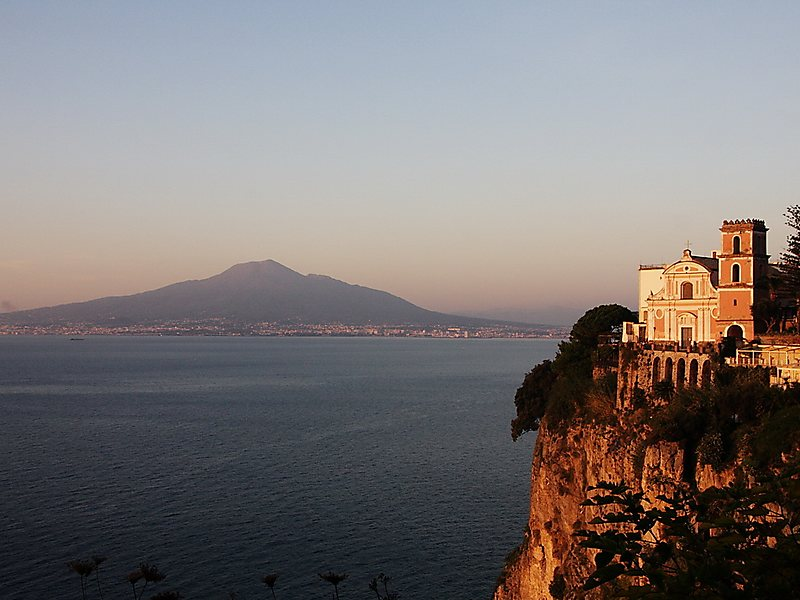
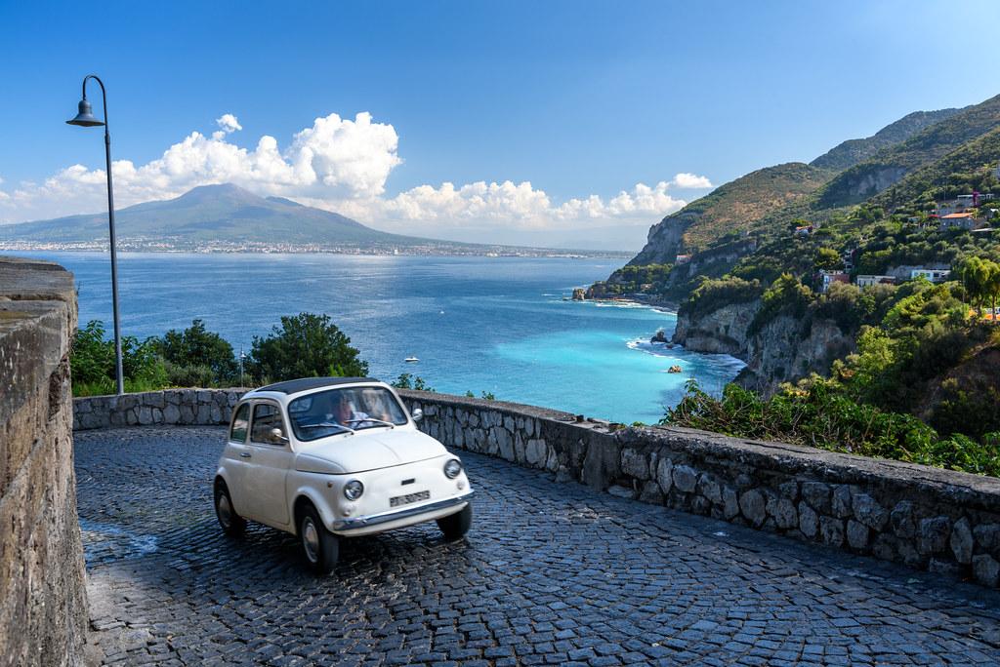
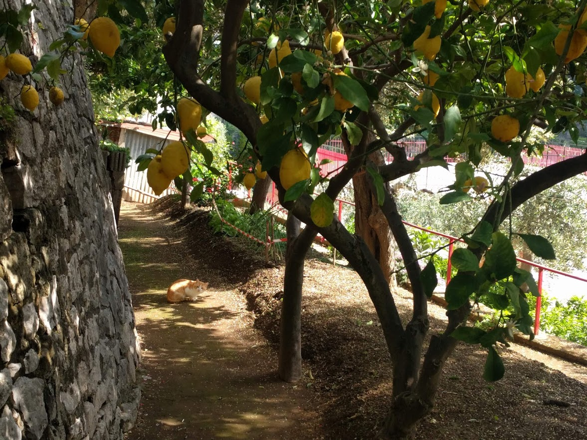

Vico Equense yra mažas miestelis prie jūros pietinėje Italijos dalyje. Šis miestelis yra netoli Neapolio miesto. Vico Equense taip pat yra nuostabiai gražios Sorrento pakrantės dalis.
 Aš lankiausi Vico Equense 2019 metais, gegužės mėnesį. Nors pabuvau tik dvi su puse dienų, man šis žavingas miestelis paliko labai didelį įspūdį. Norėčiau kažkada sugrįžti į Vico Equense ir tikrai rekomenduočiau kitiems jį pamatyti.
Emilė Pundzevičiūtė